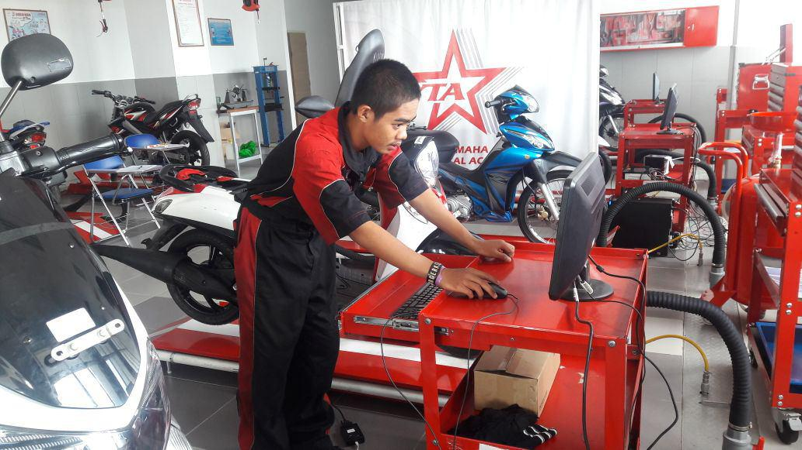

Teknik Kendaraan Ringan Otomotif
lmu yang mempelajari tentang alat-alat transportasi darat yang menggunakan mesin, terutama mobil yang mulai berkembang sebagai cabang ilmu seiring dengan diciptakannya mesin mobil.
Kelas Industri bekerja sama dengan PT. Kelas Pintar bersama PT.Daihatsu.
Jurusan tkr Teknik Kendaraan Ringan merupakan kompetensi keahlian dibidang Teknik Otomotif yang menekankan keahlian pada bidang penguasaan jasa perbaikan kendaraan ringan.
Kompetensi keahlian teknik kendaraan ringan menyiapkan peserta didik untuk bekerja pada pekerjaan jasa perawatan dan perbaikan didunia usaha / industri.
Tujuan Kompetensi Teknik Kendaraan Ringan yang harus memiliki pengetahuan dan sikap agar kompeten dalam:
1. Memahami dasar – dasar mesin.
2.Menginterpretasikan gambar teknik.
3.Menggunakan peralatan dan perlengkapan di tempat kerja.
4. Menggunakan Alat-alat ukur (measuring tools).
5.Menerapkan prosedur keselamatan, keehatan kerja dan lingkungan